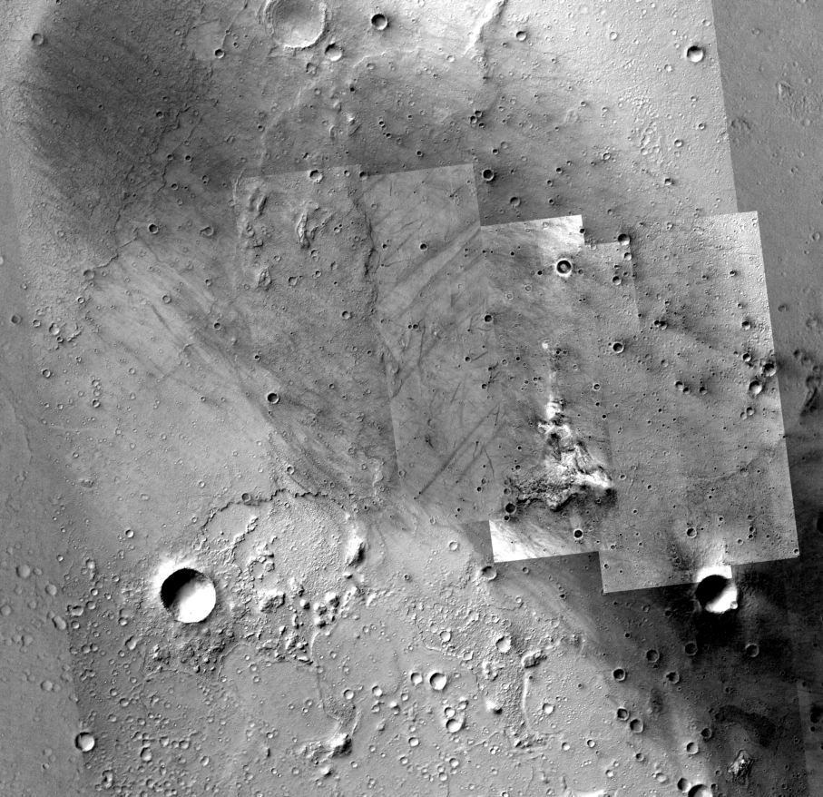

화성 3D 지형 불러오는 중…
드래그 회전 · 휠 확대/축소 · Ctrl+드래그 기울이기
실제 지형(DEM · 궤도 사진) 불러오는 중…
지형: 실제 DEM + 가시광 모자이크 (HiRISE · CTX · HRSC)
⚠
!
0°
지도에서 추가할 위치를 클릭하세요 · Esc 취소
- Gusev · Columbia Hills
- Jezero Crater
- Gale Crater
- Valles Marineris
- Olympus Mons
- Utopia Planitia
HUD